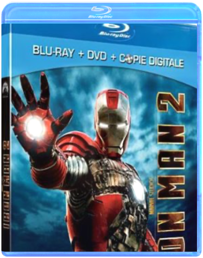
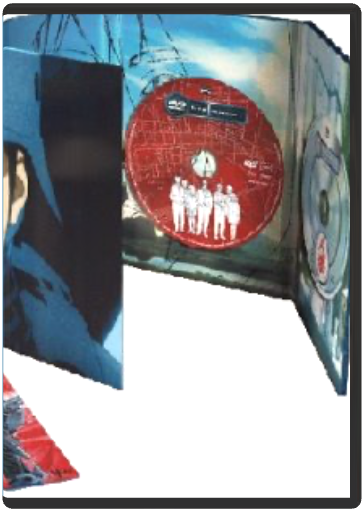

 iron man 2 - édition combojon favreau  Le monde sait désormais que l'inventeur milliardaire Tony Stark et le super-héros Iron Man ne font qu'un. Malgré la pression du gouvernement, de la presse et du public pour qu'il partage sa technologie avec l'armée, Tony n'est pas disposé à divulguer les secrets de son armure, redoutant que l'information atterrisse dans de mauvaises mains. Avec Pepper Potts et James "Rhodey" Rhodes à ses côtés, Tony va forger de nouvelles alliances et affronter de nouvelles forces toutes-puissantes... James Bond - intégrale 50ème anniversaireMartin Campbell De Campbell Martin - Avec Connery Sean - Moore Roger - Craig Daniel - 50âme anniversaire - 22 films - coffret 44 dvd - edition limitée  James Bond - Quantum of Solace (Edition Collector) James Bond, 23 : SkyfallSam Mendes Produit neuf sous blister. Vendeur professionnel, expédition garantie sous 24h à 48h ouvrables en Colissimo suivi ! James Bond, 24 : SpectreSam Mendes Blu-Ray 007 SPECTRE - Fabricant : AUCUNE - Code EAN : 3700259838542 | jason bourne - la trilogiedoug liman, paul greengrass Coffret trilogie Jason Bourne (Coffret 5 DVD)  jin-roh, la brigade des loups - édition collectormamory oshii Fin des années cinquante, un Japon totalitaire, après la victoire de l'axe. Le pays est agité des spasmes de la contestation. Une unité spéciale, la milice de sécurité métropolitaine, indépendante de l'armée et de la police, est chargée de faire régner l'ordre dans des situations exceptionnelles. Jin-Roh n'est rien d'autre qu'un OVNI dans le paysage cinématographique. Fruit de méthodes traditionnelles, il a été réalisé avec des moyens si dérisoires que l'on peut s'étonner même qu'il ait pu voir le jour. Déroutant et étrange, ce film touche également grâce à une animation inattendue, d'une grande beauté, et à certains mouvements complexes et sombres. Jin-Roh est le travail d'un auteur qui a une âme, une vision et un regard de cinéaste. Il s'adresse à un public mûr dans la mesure où il mêle romantisme (au sens originel), politique et rétrofiction, et n'a rien à envier aux méga productions américaines. —Louis Roux |
 Made with Delicious Library
Made with Delicious Library